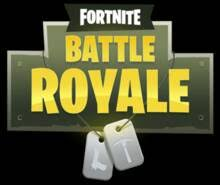

Fortnite
Fortnite é um jogo online lançado em julho de 2017 pela Epic Games. Disponível em várias plataformas, incluindo PC, consoles e dispositivos móveis, o jogo é conhecido pelo modo Battle Royale e eventos ao vivo, além de torneios competitivos com prêmios

Battle Royale
Em "Fortnite Battle Royale", até 100 jogadores são lançados em um mapa onde devem competir para ser o último sobrevivente. Eles começam sem armas e devem saquear o ambiente em busca de recursos e equipamentos para se defender e eliminar os oponentes. Uma tempestade mortal encolhe continuamente a área de jogo, forçando os jogadores a se moverem e enfrentarem uns aos outros em confrontos intensos até que reste apenas um vencedor. O jogo é conhecido por sua jogabilidade rápida, construção de estruturas em tempo real e constantes atualizações que mantêm a experiência fresca e desafiadora para os jogadores.
Imagem de divulgação:

Ano de lançamento:
O jogo Fortnite foi lançado em 2017.
Curiosidades e Notícias importantes:
Desenvolvimento pela Epic Games: O Fortnite foi desenvolvido pela Epic Games usando o mecanismo de jogo chamado Unreal 4. A Epic Games também é a empresa por trás de outros títulos populares de videogames, como Gears of War, Unreal Tournament e Infinity Blade1.
Anúncio e Lançamento: O primeiro anúncio do Fortnite foi feito em 2011, mas devido a atrasos e períodos de testes, o jogo só foi lançado em julho de 2017.Modo Battle Royale: A versão Battle Royale do jogo é bastante diferente da original. Inicialmente, os jogadores tinham que coletar matérias-primas durante o dia para defender suas bases dos ataques de zumbis à noite1.
Crescimento Rápido: No mês de lançamento, a Epic Games já havia distribuído mais de 500.000 cópias digitais do Fortnite. No mês seguinte, a contagem de jogadores ultrapassou a incrível marca de um milhão1.
Inspirado em Filme Japonês: O modo Battle Royale do Fortnite é inspirado em um filme japonês com o mesmo nome, lançado em 2000. No entanto, o jogo tem um visual bem menos sombrio1.
Danças Comemorativas: Uma das características marcantes do Fortnite são as danças comemorativas que os avatares dos jogadores podem executar no jogo. No entanto, existem algumas controvérsias envolvendo essas danças, com acusações de artistas alegando que os movimentos foram copiados sem os devidos pagamentos de direitos autorais1.
Curiosa Aposta Escolar: Um grupo de estudantes do ensino médio de uma escola nos Estados Unidos fez uma aposta curiosa com seu professor de química: se o tweet deles recebesse 6.700 retweets, o professor teria que incorporar conceitos do Fortnite em questões envolvendo ligações iônicas e tabela periódica no exame do bimestre. O tweet foi retweetado mais de 30.000 vezes.
Desenvolvido por Mateus e José - IFMS